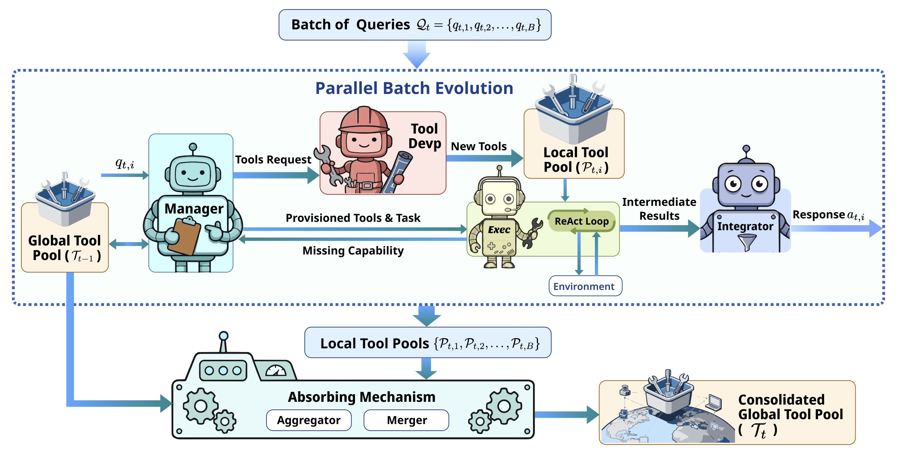
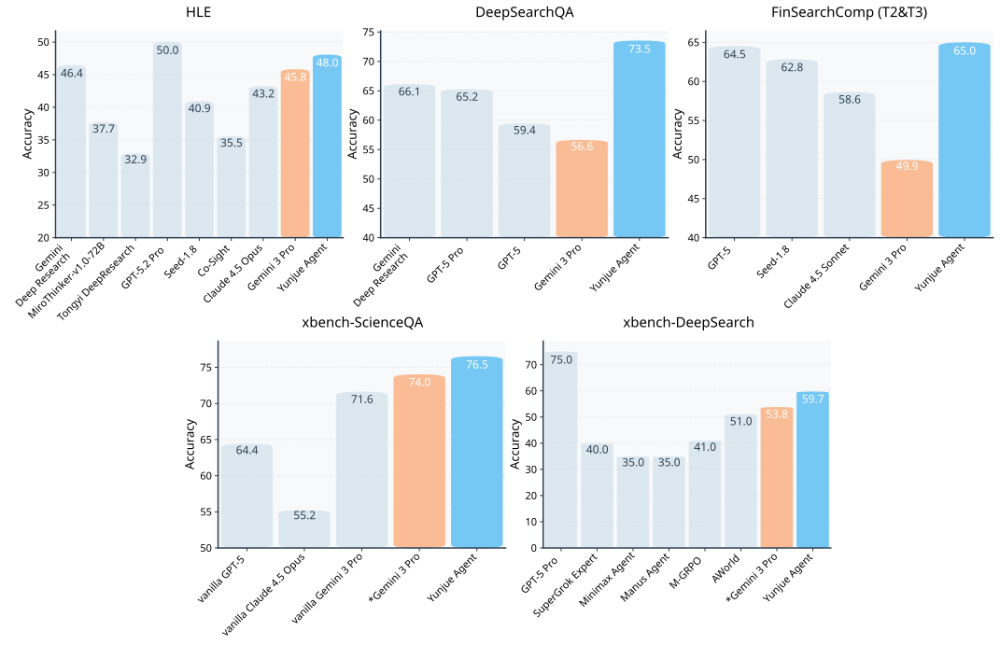
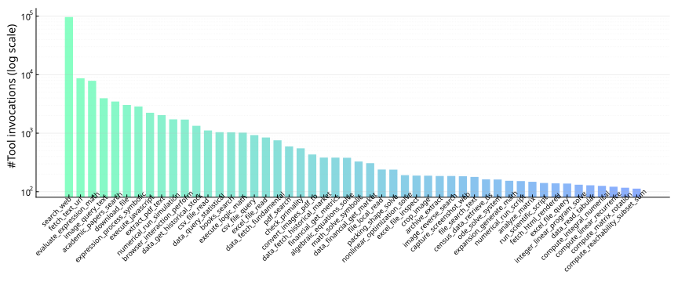
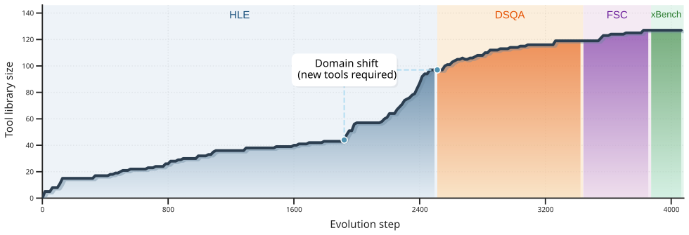
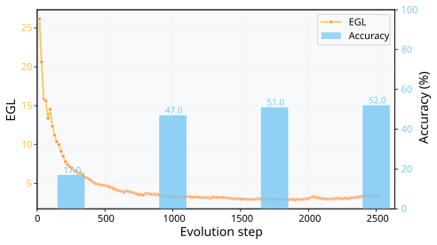
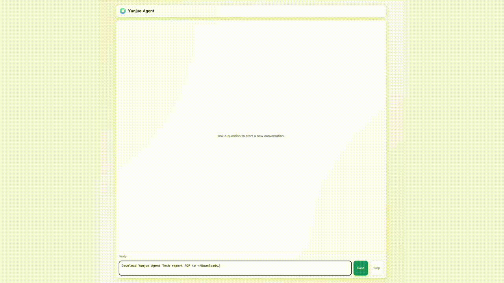
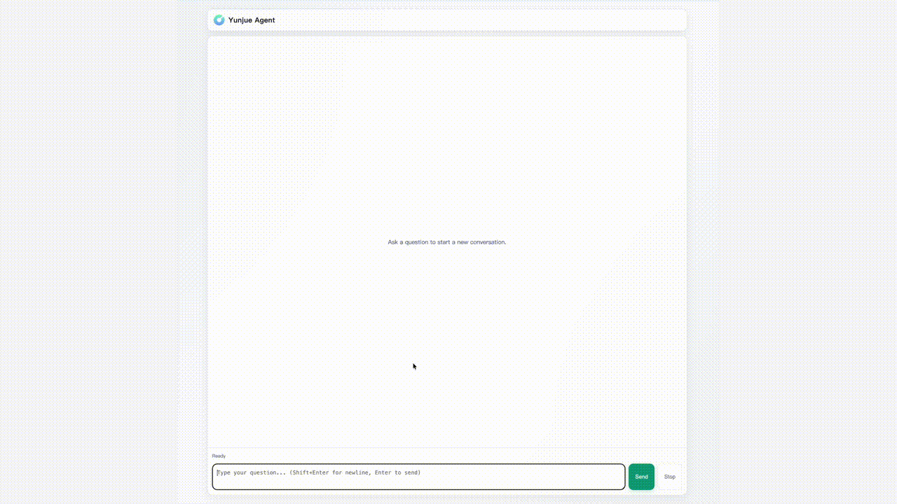
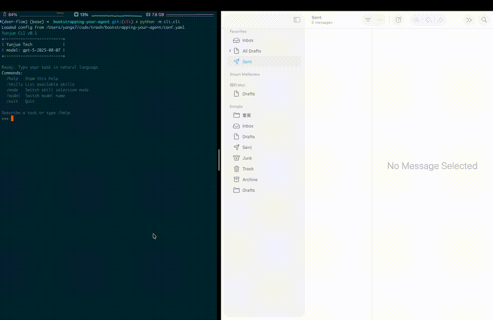
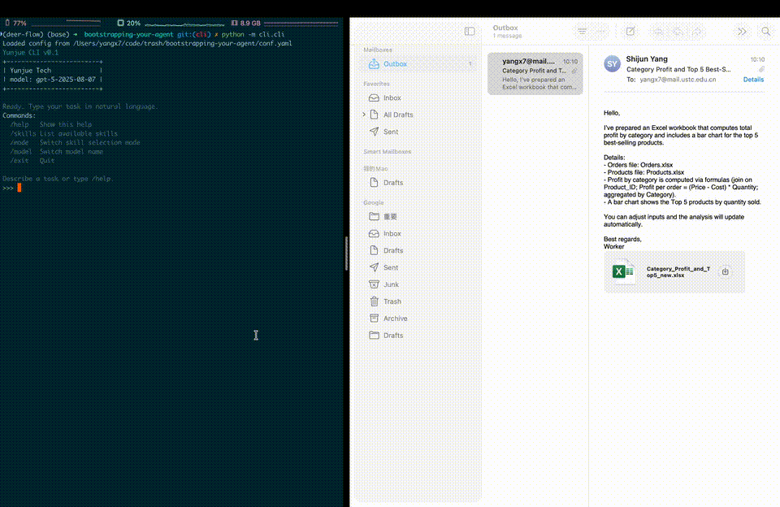

Yunjue Agent: An In-Situ Self-Evolving Agent System for Open-Ended Tasks
Abstract
Conventional agent systems often struggle in open-ended environments where task distributions continuously drift and external supervision is scarce. Their reliance on static toolsets or offline training lags behind these dynamics, leaving the system's capability boundaries rigid and unknown. To address this, we propose the In-situ Self-Evolving paradigm. This approach treats sequential task interactions as a continuous stream of experience, enabling the system to distill short-term execution feedback into long-term, reusable capabilities without access to ground-truth labels. Within this framework, we identify tool evolution as the critical pathway for capability expansion, which provides verifiable, binary feedback signals. Within this framework, we develop Yunjue Agent, a system that iteratively synthesizes, optimizes, and reuses tools to navigate emerging challenges. To optimize evolutionary efficiency, we further introduce a Parallel Batch Evolution strategy. Empirical evaluations across five diverse benchmarks under a zero-start setting demonstrate significant performance gains over proprietary baselines. Additionally, complementary warm-start evaluations confirm that the accumulated general knowledge can be seamlessly transferred to novel domains. Finally, we propose a novel metric to monitor evolution convergence, serving as a function analogous to training loss in conventional optimization. We open-source our codebase, system traces, and evolved tools to facilitate future research in resilient, self-evolving intelligence.

Main Experimental Results
The experimental results demonstrate that our system achieves state-of-the-art (SOTA) or near-SOTA performance across various datasets under a "from scratch" tool creation setting (Figure 1). The tool invocation distribution reveals the spontaneous emergence of high-utility fundamental primitives—most notably web search and mathematical evaluation—confirming the effective distillation of generalized knowledge (Figure 2). Figure 3 evidences the convergence and robust transferability of the tool library: notably, only 97 tools were generated across the entire HLE, while subsequent sequential transfers to specialized domains (such as DeepSearchQA) exhibited near-zero marginal tool growth. Finally, Figure 4 quantifies this stabilization using our proposed Evolutionary Generality Loss (EGL) metric; the declining EGL trajectory confirms that the system rapidly converges to a stable state where tool reuse significantly outpaces new tool creation.

Performance comparison of Yunjue Agent against state-of-the-art agents and agentic foundation models. Our method is highlighted in cyan, and the backend model (Gemini 3 Pro) appears in orange. *Gemini 3 Pro denotes our implementation with a Python interpreter.

Invocation frequency distribution of the toolset evolved across five benchmarks. We report the top 50 tools, illustrating the emergence of high-generalizability primitives.

Evolution of the tool library size relative to the cumulative number of processed queries. The experimental sequence follows the curriculum HLE → DeepSearchQA → FinSearchComp → xbench-ScienceQA → xbench-DeepSearch, highlighting the convergence of tool synthesis.

EGL dynamics on HLE and accuracy on selected datasets vs. evolution step. The orange curve shows the EGL trend (left axis, scaled by 1000). Blue bars indicate the accuracy (right axis) of agents using HLE toolsets frozen at 10%, 40%, 70%, and 100% of evolution.
Evolving Tools for Open-Ended Tasks
We provide a web demo that developers can deploy themselves to demonstrate Yunjue Agent's tool self-evolution capabilities and execution process. The first demo shows the Agent executing tool decomposition, creating tools to search and scrape PDFs from the internet; the second demo demonstrates the ability to search for US stock information by reusing existing tools.

Achieved by GPT-5-mini as backbone.
「Query」 Download Yunjue Agent tech report PDF to ~/Downloads.

Achieved by GPT-5-mini as backbone.
「Query」 List top 5 gainers on the Nasdaq over the past month.
You Describe Skill, Yunjue Handles Rest
Yunjue Agent streamlines the path from expertise to action. By simply providing a SKILL.md—as we believe high-level experience remains a human-driven asset—the agent autonomously generates the necessary tools to execute those skills. Experience the seamless transformation of documented knowledge into functional automation.

Achieved by GPT-5 as backbone.
「Query」 I have two Excel spreadsheets on my desktop: one for orders and one for products. Please help me calculate the total profit for each category and create a bar chart of the top 5 best-selling products. Please send the results to yangx7@mail.ustc.edu.cn.

Achieved by GPT-5 as backbone.
「Query」 I have a technical report published by Yunjue Tech on my computer. Could you please find that report for me, summarize its content, create a 12-page academic presentation-style PowerPoint slide, and then send it to yangx7@mail.ustc.edu.cn
Follow our work
We provide a fully-reproducible codebase to reproduce the experimental results in the paper, as well as scripts for locally deploying the aforementioned Web demo and CLI demo. We welcome developers to actively submit issues and PRs.
BibTeX Citation
@misc{li2026yunjueagenttechreport,
title={Yunjue Agent Tech Report: A Fully Reproducible, Zero-Start In-Situ Self-Evolving Agent System for Open-Ended Tasks},
author={Haotian Li and Shijun Yang and Weizhen Qi and Silei Zhao and Rui Hua and Mingzhu Song and Xiaojian Yang and Chao Peng},
year={2026},
eprint={2601.18226},
archivePrefix={arXiv},
primaryClass={cs.AI},
url={https://arxiv.org/abs/2601.18226},
}